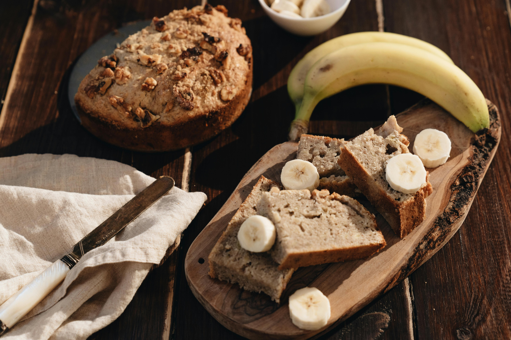

Home
Banana Bread Recipe 🍞
Prep Time: 10 minutes | Cook Time: 40 minutes

Ingredients
- 3 large black bananas
- 75ml vegetable oil
- 100g brown sugar
- 225g plain flour
- 3 heaped tsp baking powder
- 3 tsp cinnamon
- 50g dried fruit
Steps
- Heat oven to 200C/180C fan/gas 6. Mash 3 large black peeled bananas with a fork, then mix well with 75g vegetable or sunflower oil and 100g brown sugar.
- Add 225g plain flour, 3 heaped tsp baking powder and 3 tsp cinnamon or mixed spice, and combine well. Add 50g dried fruit or nuts, if using.
- Bake in an oiled, lined 2lb loaf tin for 20 minutes. Check and cover with foil if the cake is browning.
- Bake for another 20 minutes, or until a skewer comes out clean.
- Allow to cool a little before slicing. It's delicious freshly baked, but develops a lovely gooey quality the day after.
- Serve and enjoy!